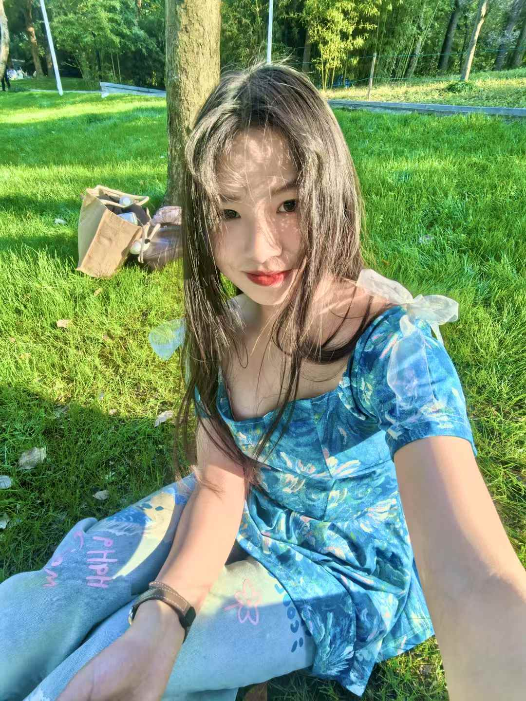

资本市场 / ESG / 数据
Portfolio 2026
资本市场 / ESG / 数据
Ruixin Ji
聚焦资本市场与 ESG 研究，擅长将披露文件、行业资料和结构化数据转化为可复核的分析结论。
资本市场
ESG
数据分析
研究输出

Python
财务披露
ESG 研究
PPT / 底稿
定位
以资本市场视角组织复杂信息，形成可追溯的判断依据。
候选人信号
资料检索、数据清洗、逻辑提炼、可复核输出。
现于长江保荐资本市场部实习，参与发行人材料、公告披露、行业资料与监管信息梳理，支持项目研究与业务底稿形成。
过往经历覆盖 ESG 数据、绿色金融、商业分析与环境科学机器学习研究，能够在跨领域信息中提炼结构、识别变量并输出可复核结论。
资本市场材料研究
跟踪发行人、行业、公告披露与监管资料，形成结构化底稿。
ESG 与可持续金融
处理 ESG 与碳市场数据，识别企业表现、风险点与行业趋势。
数据治理与分析表达
将分散表格清洗为指标体系，并转化为图表、报告和汇报材料。
机器学习与实证验证
围绕预测、因子筛选和模型比较，完成从数据到验证的分析闭环。
工作方式
从原始资料到分析结论，强调可追溯、可比较、可复核。
输入公告 / 披露 / 财务数据 / ESG 数据
处理检索 / 清洗 / 交叉验证 / 提炼
输出研究底稿 / 分析图表 / PPT / 结论摘要
经历
代表性经历
资本市场与可持续金融保荐业务 / 可持续金融 / ESG 研究
资本市场业务
长江保荐 | 资本市场部实习生
- 参与发行人材料、行业资料、公告披露与监管信息整理，沉淀项目研究底稿。
- 梳理发行审核、再融资、并购重组等业务要点，支持信息检索、材料比对与汇报输出。
ESG 数据与趋势分析
金司南金融研究院 | ESG 实习生
- 清洗与汇总 1000+ 条 ESG 相关数据，支持趋势判断与市场图表输出。
- 参与需求分析报告、市场研究 PPT 与碳市场材料撰写，提升数据到观点的转化效率。
企业 ESG 表现研究
MSC 咨询 | ESG PTA
- 分析 30 家企业 ESG 表现，梳理供应链可持续管理框架与关键风险点。
- 参与估值模型搭建，尝试将 ESG 因子纳入企业定价与比较分析。
绿色金融项目
法国巴黎银行绿色金融挑战赛 | 绿色金融项目
- 构建 ESG 多因子评价框架，评估绿色资产质量与上市公司价值表现。
- 使用 Python 处理财务与 ESG 披露数据，完成策略报告、结果解释与路演展示。
数据与商业分析经历Python / 预测 / 看板
供应链数据建模
米其林投资（中国） | ESG 数据实习生
- 使用 Python 清洗 20+ 家供应商产能、交付周期与准时交付数据。
- 构建供应链风险预警指标，识别短缺风险与产线延迟影响因素。
咨询数据分析
罗兰贝格战略咨询公司 | 咨询实习生
- 处理 500+ 条业务数据，完成清洗、特征工程和模型训练。
- 基于回测优化补货策略，缺货风险降低 15%。
经营数据看板
中国电信翼支付 | 综合实习生
- 整理销售合同与绩效数据，支持采购策略与经营分析。
- 搭建订单、交付等核心指标看板，提升日常经营跟踪效率。
科研及校园经历机器学习建模 / 环境数据 / SCI 论文
SCI 论文 | 学生一作项目
New Journal of Chemistry | 氯霉素污染土壤修复研究
- 论文题名：Synergistic activation of persulfate by Cu(II) and Fe(III) enhanced with catechin for chloramphenicol removal from soil。
- NJC, 2025；DOI: 10.1039/d5nj03893f；CAP 2 h 降解率 100%，12 h TOC 矿化率 28.2%。
SCI 论文 | 第二作者
ChemCatChem | 可见光催化降解四环素研究
- 第二作者；论文题名：An Efficient Fe3O4/BiOI1/3Cl2/3 Heterostructure Catalyst for the Tetracycline Degradation Under Visible Light。
- ChemCatChem, 2025；DOI: 10.1002/cctc.202501272；可见光 60 min 四环素降解率 91.3%。
机器学习建模
环境数据机器学习建模 | 复旦大学
- 围绕污染物光降解效率预测，使用机器学习方法完成数据处理、特征构建、模型训练与验证。
- 掌握 Python、Pandas、NumPy、Origin、MATLAB 等工具，能够进行模型比较、误差分析与结果可视化。
项目
可继续展开的三个研究方向。
资本市场
资本市场研究工作台
将公告、披露与发行人材料沉淀为可检索、可对比的研究摘要。
- 公告跟踪
- 行业对比
- 底稿沉淀
ESG / 研究
ESG 趋势挖掘与市场报告
将 ESG 与碳市场数据转化为趋势判断、图表输出和报告框架。
- 指标清洗
- 趋势识别
- 图表表达
时序机器学习
光降解效率预测模型
基于机器学习预测污染物光降解效率，并解释关键影响因子。
- 预测建模
- 模型比较
- 因子解释
工作之外
保持长期训练，也保留现场判断。
攀岩
在路线里拆问题，训练专注和抗压。
健身
用长期主义维持身体和节奏。
篮球
快速决策、团队配合和竞争感。
联系